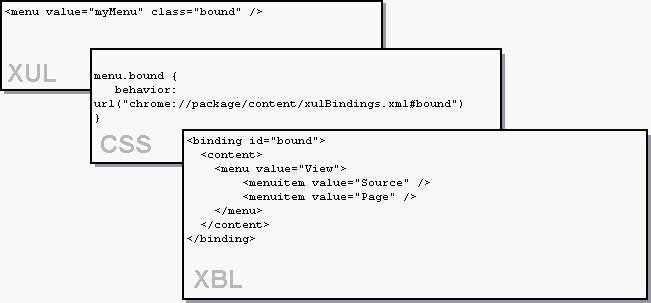
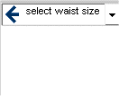
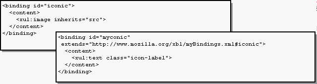
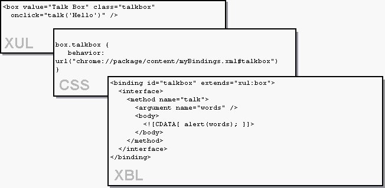

You are currently viewing a snapshot of www.mozilla.org taken on April 21, 2008. Most of this content is highly out of date (some pages haven't been updated since the project began in 1998) and exists for historical purposes only. If there are any pages on this archive site that you think should be added back to www.mozilla.org, please file a bug.
| << XULNotes | Author: Ian Oeschger | Other Docs: Extensible Bindings Language |
In this article:
You are a web developer, and you've begun to hack a little at the XUL files in Netscape 6's chrome to get a feel for what is defined where. You found all the XUL files, you've leafed through the XUL Reference, and you begin to use the widgets in the toolkit to create a series of very simple XUL windows of your own -- windows in which, for example, menulists display different models of automobile to the user, buttons send up alerts, and tabbed panels display different sets of data.
But you want more. You've been reading in the newsgroups how XUL now provides some way to extend your interface development beyond the actual widgets in the XUL toolkit, to actually create new widgets. People in the newsgroups seem to be creating entirely new widgets and then telling their friends about it. And you could use a few new widgets. You have an idea for an application that would require widgets that aren't currently provided in the set, and you want to know what this extensibility talk is all about.
This extensibility, housed in a complementary language called XBL, for the "eXtensible Bindings Language," is the subect of this article. The following sections describe how to take advantage of the extensibility of the new XBL widgets being checked into Mozilla all the time, and how to create your own new widgets for use in your own applications development.
Like XUL, XBL is a XML-based language, so these three feature areas show up in XBL in the form of elements and attributes. Though we can't discuss the language exhaustively in the short space of this article, the sections below describe the basic syntax for taking advantage of these extensibilility features in your XUL development. To learn more about the details of XBL, see the XBL specification and review the ways that XBL is already being used in the Mozilla source code.
The XBL file that Mozilla uses to define the bindings for its XUL files is an XML file sitting in the chrome directory called xulBindings.xml.
Individual XBL bindings are referenced from the CSS file, or skin, which in turn is loaded by the actual XUL file. In a way, this indirection is what makes XBL bindings so powerful, since it allows you to define new content and element additions by simply "skinning" a given XUL file. When you combine the XBL's extensibility with the dynamic quality of Cascading Stylesheets, you begin to see how powerful an addition XBL is to the stable of technologies that is XUL.

In the XUL file, classes of elements and individual elements are skinned with style definitions in the CSS file. With the advent of XBL, the skin can in turn point to bindings for those XUL elements, and these bindings may contain new content, new interface, or new handlers. As we discuss in the sections below, to some extent this breaks the restriction of skins to style and image swapping and opens up the CSS to new content definitions, new interfaces, and even bindings to the core XPCOM interfaces through the XPConnect technology.
Ignoring the <handler> part of the XBL for a moment, you can see that the content portion of the binding includes three children: an image, a text label, and a second image. In the default menulist widget, the first image is not employed until the UI developer uses the src attribute to point to an image, at which point the menulist widget includes an icon of some sort on the left side:

When you set the src attribute on the parent menulist, you are actually setting the src for the image element that is an anonymous child in the XBL binding. See Inheriting From an Existing Widget for more information on XBL inheritance.
Note that in an XBL file, the XUL widgets are namespaced, to distinguish them from the XBL namespace itself. The bindings use classes to refer to other elements. When the style definition referenced by that class is another XBL binding, the given XBL binding is, in a way, subclassing the referenced binding. When the class refers to a regular XUL widget, the binding is borrowing the skin of the XUL widget for its look and behavior.
Content that appears like this in the XBL file but not in the XUL widget itself is called anonymous content. Anonymous content is invisible to users peeking at the XUL UI and also invisible to the Document Object Model (DOM) except as an array of unknown content accessible below the actual XUL element. To access the first anonymous content element in the XBL widget above, you can use the getAnonymousNodes method, which returns an array of the anonymous content nodes on the specified element. Once you have the node, you can use the DOM to manipulate that node as you would any other content node:
var anonymousNodes = document.getAnonymousNodes(this); imageSrc = anonymousNodes[0].getAttribute("src")
The four main child elements of an XBL binding are described in the following table:
Element Description <content> As described above, the content element defines anonymous child elements for a given binding. <interface> The interface element describes additional properties and methods with which the bound element can be associated. Use the interface element to extend the interface of a given XUL widget. <event> The event element is used to define new events that can be called from XUL. <handler> Do not confuse the <handler> element with <event>. The handler element is used to define event handlers that will be invoked when the appropriate events are fired in the interface.
Like a XUL file, the XBL contains a group of elements in parent-child relationships. The root element of an XBL file is always <bindings>, under which can any number of separate <binding> elements can be defined:
<?xml version="1.0"?> <bindings id="xulBindings" xmlns="http://www.mozilla.org/xbl" xmlns:html="http://www.w3.org/1999/xhtml" xmlns:xul="http://www.mozilla.org/keymaster/gatekeeper/there.is.only.xul"> <binding id="thumb" extends="xul:box"> <content> <xul:spring flex="1"/> <xul:image inherits="src"/> <xul:spring flex="1"/> </content> </binding> <binding id="scrollbar"> <content> <xul:scrollbarbutton type="decrement"> <xul:image inherits="src"/> </xul:scrollbarbutton> <xul:slider flex="1" inherits="curpos,maxpos,pageincrement,increment"> <xul:thumb inherits="align,src" flex="1"/> </xul:slider> <xul:scrollbarbutton type="increment"> <xul:image inherits="src"/> </xul:scrollbarbutton> </content> </binding>
The example above shows the root element and its namespace declarations, and then two bindings, "thumb" and "scrollbar", both of which are used in the Mozilla browser to extend the XUL widgets they are bound to. Some of the functionality of this example is discussed in the following two sections.
Inheritance takes a couple of distinct forms in XBL. The shallower version of inheritance, described briefly above, uses the inherits attribute on the content elements in the binding to reflect XUL attributes in an element's binding content. This is a mechanism for inheriting attributes one by one from the parent element. In the menulist example above, for instance, the anonymous content inherits attributes from the parent widget, which in this case is the menulist. The inherited src attribute, for example, indicates that when a src is set on the menulist itself, the underlying image element can use that attribute on its own.
The anonymous content also inherits some of the menulist's attributes for the text element. Note that the crop attribute is set on the text element but that it also inherits a settable crop attribute from the parent widget. In this way, attribute defaults for the anonymous content can be pre-set but also set programmatically.
<binding id="subclass" extends="http://www.mozilla.org/xbl/htmlBindings.xml#baseclass">
XBL bindings can also inherit from XUL elements (e.g. <box>), in which case the XUL namespace must be used:
<binding id="thumb" extends="xul:box">
The inheriting binding picks up all of the content, event handlers, and additional interface defined in the base binding. This inheritance scheme is what makes it possible to create new XBL bindings from existing ones, or to subclass a basic XBL binding and add various additional features to it, like content or extra event handlers. This inheritance takes place at arbitrary levels, so new, derived XBL bindings can in turn be subclassed and extended.
To demonstrate the use of th <interface> element in XBL, this section describes the creation of an additional method on a binding that has inherited from a binding in Mozilla's xulBinding.xml file.
The interface element describes additional properties and methods in a binding. In general, items defined within a binding take precedence over derived content, so usually the derived content is appended to the end of the binding definition. For example, the <xul:image> defined in the following base element comes after the <xul:text> defined in the binding subclass:

Method definition in the interface element takes the following form:
<bindings xmlns:xul="http://www.mozilla.org/keymaster/gatekeeper/there.is.only.xul" xmlns="http://www.mozilla.org/xbl"> <binding> ... <interface> <method name="doSomething"> <argument name="input parameters"/> <body> <![CDATA[ in-line javascript code or function calls... ]]> </body> </method> ... </interface> ... </binding> ... </bindings>
To add a method to a binding that sends up an alert with input text, you could extend the XUL box and add a single method child in the interface element, like so:
<binding id="talkbox" extends="xul:box"> <interface> <method name="talk"> <argument name="words" /> <body> <![CDATA[ alert(words); ]]> </body> </method> </interface> </binding>
Thus defined, this method can be called on the bound element as easily as any basic JavaScript function:

There is a lot about XBL that cannot be covered in an article such as
this one, which obviously provides only a sample the kinds of extensions
you can build with XBL. An updated version of the XBL reference
document has just been released, however, and so has an article on using XBL to access XPCOM object via XPConnect. Look for updated drafts of the XBL document, more pervasive and sophisticated use of XBL in the Mozilla browser, and new implementations of this powerful language in developers' custom applications.